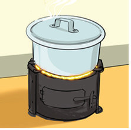
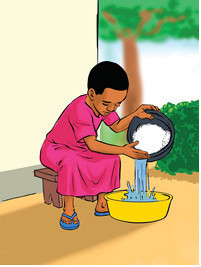
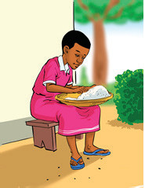

(f) Study each of the following pictures closely. Notice the jumbled sequence of actions and the details in each step of cooking rice. Arrange them in proper sequence.
1

Boiling the water.
2

Washing or rinsing the rice.
3

Sorting the rice to remove wastes.
4
Covering the pot for the rice to boil.